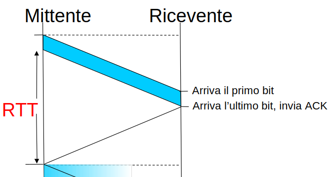
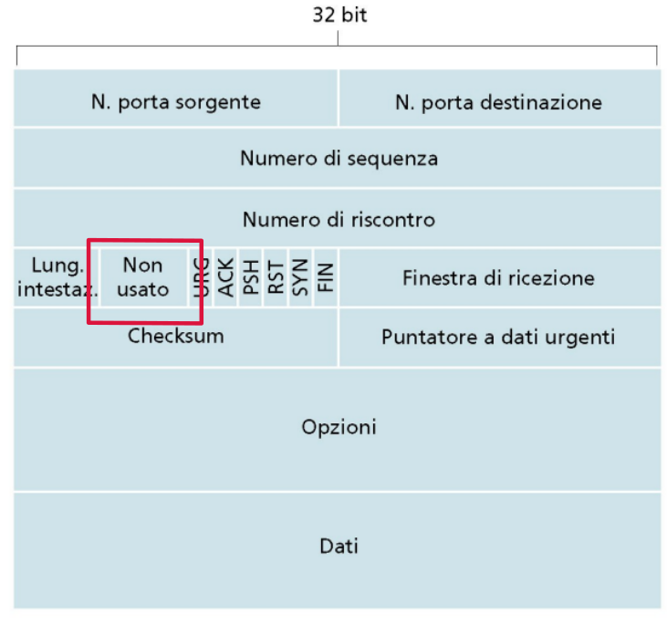
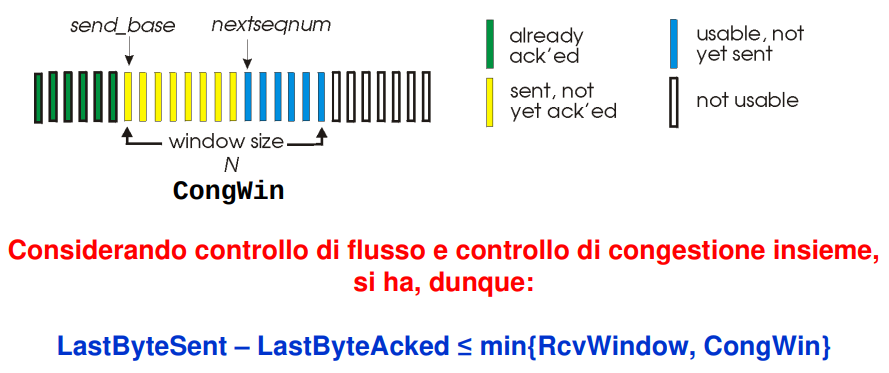

Controllo di congestione in TCP
Il controllo di congestione è una tecnica del protocollo TCP che permette di non intasare la rete di segmenti TCP quando questa è congestionata.
→ Ovvero quando è presente un’alta probabilità che il pacchetto venga scartato perché arrivi in un router avente la coda di trasmissione satura.
Questo controllo è nettamente più difficile da implementare perché non è presente un feedback diretto come è presente nel controllo di congestione.
In più il protocollo TCP è un protocollo end-to-end → non piò ottenere informazioni dirette sullo stato della rete, perché a utilizzare il protocollo TCP in una comunicazione sarà il mittente e il destinatario.
→ I router lavorano fino a livello rete.
Quindi possiamo dire che il controllo della congestione è un aspetto critico del protocollo TCP.
Ogni variante del protocollo TCP ha diversi approcci per il controllo della congestione.
Congestione della rete
A cosa è tecnicamente dovuto la congestione della rete:
- un numero elevato di sorgenti di traffico.
→ Tanti utenti nella rete che inviano contemporaneamente pacchetti. - sorgenti di traffico che inviano troppi dati.
→ Inviano dati senza alcun controllo, quindi al massimo del proprio rate trasmissivo - traffico inviato ad una frequenza molto elevata.
In presenza di questi fenomeni la rete è sovraccaricata. In questa condizione quindi si verificano diversi effetti spiacevoli:
- perdita dei pacchetti: buffer overflow nei router;
- ritardi nell’inoltro dei pacchetti: accodamenti nei buffer dei router
- scarso utilizzo delle risorse della rete
Molte prime soluzioni puntavano all’aumentare la dimensione del buffer per l’accodamento dei messaggi in modo da evitare che vengano scartati molto facilmente.
Ma questa soluzione non risolve totalmente i problemi di avere una rete intasata poiché non si impone alcun controllo sulla massiva quantità di dati che la rete deve trasportare.
Infatti con questa prima soluzione si diminuisce la possibilità di una perdita di un pacchetto, ma aumenta il ritardo che un pacchetto può accumulare nel buffer dei router.
In conclusione è necessario un controllo sulle richieste delle applicazioni per far in modo che il ritardo sia accettabile e che diminuisca la possibilità che un pacchetto venga scartato.
Tecniche di controllo della congestione
Come detto, TCP è un protocollo end-to-end e proprio per questo il problema principale nasce da come rendere il protocollo conscio della situazione della rete.
Esistono diversi approcci: esplicito e implicito.
Approccio end-to-end
L’approccio end-to-end è l’approccio implicito.
- nessuna segnalazione esplicita dalla rete;
- a partire dall’osservazione di ritardi e perdite di pacchetto gli end-system deducono un stato di congestione della rete;
Questo è l’approccio utilizzato dal protocollo TPC.
Approccio in base a segnalazioni della rete
L’approccio in base alle segnalazioni della rete è l’approccio esplicito, infatti:
- i router forniscono informazioni circa lo stato della rete agli end-system
Il problema è capire in che modo questi devono inviare questa informazione agli end-system che stanno congestionando la rete.
A questo proposito non è molto efficiente implementare all’interno di ogni router un algoritmo capace di identificare quali siano gli host che stanno intasando la rete.
→ ogni router avrebbe un overhead elevatissimo.
Inoltre non sarebbe neanche efficiente perché i messaggi per comunicare queste informazioni viaggiano nella stessa rete (si sarebbe utilizzato il protocollo ICMP), quindi saranno anche questi affetti da ritardi o perdite per via della congestione.
→ si potrebbe peggiorare la situazione se ogni router inviasse tali messaggi nel momento di una congestione.
Per questo si è pensato di sfruttare l’invio dei messaggi di dati/riscontro tra mittente e destinatario.
Questi segmenti che il mittente e il destinatario si scambiano possono essere utilizzati sia per ottenere un feedback implicito sia un feedback esplicito.
caso implicito
Cosa può capire il mittente da un messaggio di riscontro del destinatario?
- Può valutare il RTT (Round Trip Time), ovvero l’intervallo di tempo che intercorre dalla fine dell’invio di un messaggio dati alla ricezione del messaggio di riscontro per tale segmento.

Il mittente calcola RTT per ogni pacchetto ricevuto. Può valutare l’andamento del RTT nel tempo e quindi può farsi un idea dell’andamento dello stato della rete.
→ può capire se la rete sta andando verso la congestione.
Caso peggiore di RTT che può capitare è che il riscontro per il pacchetto inviato non arrivi, sia stato scartato da altri router.
Questo potrebbe essere l’evento che caratterizza maggiormente lo stato di una rete congestionata.
Ma la valutazione su RTT non produce delle certezze sull’effettivo stato della rete, questo perché un pacchetto potrebbe perdersi nella rete anche per altri motivo, non solo perché questa è congestionata.
- alterazioni del pacchetto che non lo rendono più valido
- errori nella tabella di routing
- indirizzo di destinazione errato o inesistente
- errore nella checksum
- TTL o timeout
- errore di frammentazione
Quindi non è un criterio esatto, la valutazione del RTT, per misurare lo stato corrente di una rete.
caso esplicito
Nel caso esplicito è il router che deve far conoscere al mittente lo stato della rete.
Abbiamo già notato che sarebbe impraticabile che il router inviasse direttamente il segnale al mittente in particolare, quindi si utilizza un altro approccio che sfrutta i segmenti TCP che host mittente e destinatario si scambiano.
In particolare il router setta, quando valuta una condizione di congestione, degli appositi bit presenti nell’header TCP.
Vengono utilizzati alcuni dei bit che sono rimasti disponibili all’utilizzo dell’header TCP.

Quando un router è in condizione di congestione, inoltra i segmenti TCP andando a settare all’interno dell’header TCP questi flag e lo inoltra normalmente.
Il segmento arriverà al destinatario e questo setterà, nel momento in cui invierà un riscontro al mittente, lo stesso flag ad 1.
In questo modo il mittente è a conoscenza dello stato di congestione della rete.
→ implementa un meccanismo esplicito per segnalare di rallentare il tasso di trasmissione.
Questo approccio è utilizzabile ma è un bene che sia utilizzato in concomitanza con l’approccio implicito → per rendere il più indipendente possibile il controllo di congestione dall’esterno.
Controllo della congestione: finestra di congestione
Per rallentare il rate trasmissivo si opera sulla dimensione della finestra di congestione, come si fa per il controllo di flusso.
L’algoritmo di controllo di congestione determinerà un valore per la finestra di trasmissione.
Allo stesso modo l’algoritmo di controllo di flusso determinerà un valore per la finestra di trasmissione a sua volta.
→ il valore minore tra i due risultati sarà l’effettivo valore della finestra di congestione.
Ovviamente questo valore va adattato nel corso del tempo perché lo stato della rete muta.
Quindi la dimensione della finestra di trasmissione varierà nel tempo a seconda dello stato della rete o alla disponibilità di spazio dell’host destinatario.

Idea di base:
Si procede per tentativi, per stabilire quanto si può trasmettere.
-
Obiettivo:
trasmettere alla massima velocità possibile (Congwinquanto più grande possibile) senza perdite. -
Approccio utilizzato:
iniziare in maniera prudente →Congwincon un valore piccolo.
Man mano che arrivano risconti, finché non si verifica una perdita di un segmento, il valore diCongwinviene incrementato velocemente, inizialmente, per arrivare ad un valore di regime.Quando si arriva al valore di regime l’incremento diminuisce drasticamente.
In seguito alla perdita di un segmento:
- decremento di
Congwinrapido → per consentire la rete di riprendersi dall’eventuale stato di congestione - ricomincia da capo
- decremento di
algoritmi di controllo di congestione
- Slow Start
- Congestion Avoidance